Team
Coordinators
Prof. Dr. Aline Villavicencio
Aline Villavicencio is the Director of the Institute of Data Science and Artificial Intelligence in the University of Exeter. She is the coordinator of AIM-Health project in UK. Her research on multiword expressions and figurative processing will contribute with the identification of potential areas of interest in AIM-Health project.
Prof. Dr. Helena Caseli
Helena Caseli is a Full Professor at Federal University of São Carlos (UFSCar) and the coordinator of LALIC. She is the coordinator of AIM-Helath project in Brazil. She has a PhD in Computer Science and more than 25 years of research in Natural Language Processing (NLP). In this project, Dr. Caseli is supervising graduate and undergraduate students on topics related to NLP applied to mental health.
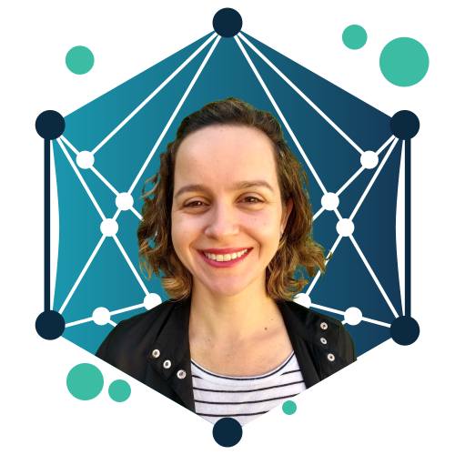
Prof. Dr. Rodrigo Wilkens
Rodrigo Wilkens holds a PhD in Computer Science from UFRGS (Brazil) and, since then, had worked at the Université catholique de Louvain (Belgium), the University of Strasbourg (France) and the University of Essex (UK), in several NLP topics. Since 2024, he has held the position of Lecturer (assistant professor) at the University of Exeter (UK). With a strong background in NLP and machine learning, Dr. Wilkens will contribute to the development of the personalized conversational agent aimed at mental health.
Researchers
Prof. Dr. Doretta Caramaschi
Doretta Caramaschi is a lecturer in neurodevelopment and mental health at the University of Exeter. With a background in epidemiology and neuroscience, her research focusses on factors influencing mental health using large datasets.
Prof. Dr. Eloize Seno
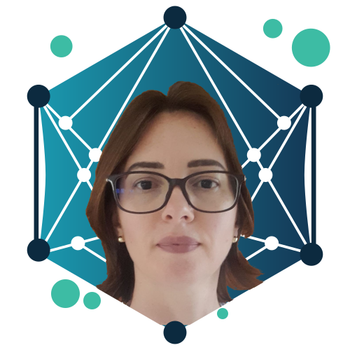
Eloize Seno is an Associate Professor at the Federal Institute of Education, Science and Technology of São Paulo (IFSP) and the vice-coordinator of LALIC. She has a PhD in Computer Science and more than 20 years of research in Natural Language Processing (NLP). In this project, Dr. Seno will collaborate with paraphrase generation and sentiment analysis in mental health texts.
Prof. Dr. Heloísa Frizzo
Heloísa Cristina Figueiredo Frizzo is an occupational therapist with a PhD in Sciences and a Post-doctorate in Sciences, Technology and Society. Dr. Frizzo is an Associate Professor at the Federal University of Triângulo Mineiro (UFTM, Brazil) and collaborates with the Postgraduate Programs in Psychology/UFTM, in Clinical Management/UFSCar and in Mental Health/University of Uberaba. In this project, she will collaborate in the production of personalized interventions for the individual’s context.
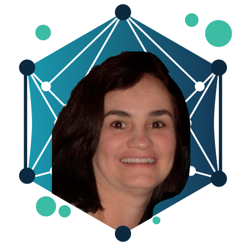
Prof. Dr. Ivandré Paraboni

Ivandré Paraboni is an Associate Professor at University of São Paulo State (USP). In this project, Dr. Paraboni will collaborate with prompt-based methods for the detection of signs of depression from social media text.
Prof. Dr. Ke Li
Ke Li is an UKRI Future Leaders Fellow, a Turing Fellow, and a Reader in Computer Science at the University of Exeter. His research has contributed to the fundamental development of computational/artificial intelligence (CI/AI) for black-box optimisation and decision-making (especially with multiple conflicting objectives), as well as their applications in software engineering, renewable energy, and life sciences.
Prof. Dr. Kim Wright
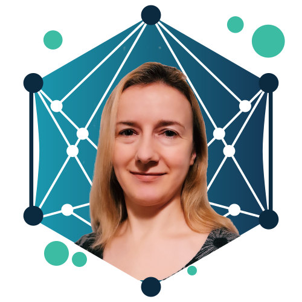
Kim Wright is Professor of Clinical Psychology at the University of Exeter. She specialises in the development and evaluation of psychological interventions for people with mood disorders, and is advising on clinical aspects of the project.
Dr. Mateus de Souza Monteiro
Mateus de Souza Monteiro is a human-computer interaction researcher with a background in visual and interaction design for app/web and conversation design. In this project, Dr. Monteiro will support user research activities and the development of the conversational agent. His project is supported by FAPESP (26/04034-7).
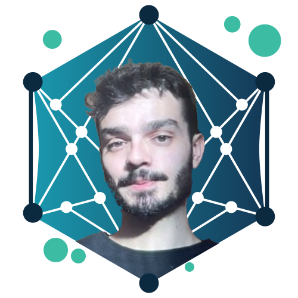
Prof. Dr. Sylvia Iasulaits
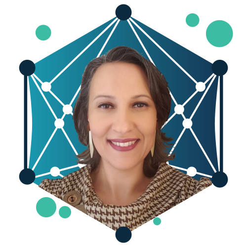
Sylvia Iasulaits is a Professor at the Federal University of São Carlos (UFSCar, Brazil) and Honorary Research Fellow at Liverpool Hope University, currently conducting postdoctoral research in computer science. Tenured faculty member of the Graduate Program in Science, Technology, and Society and the Graduate Program in Information Science at UFSCar, leading the research center Interfaces – Center for Sociopolitical Studies of Algorithms and Artificial Intelligence, focusing on computational social science and social data science.
Prof. Dr. Taís Bleicher
Taís Bleicher is a Professor at Universidade Federal de São Carlos (UFSCar). Dr. Bleicher is a psychologist with a master’s degree in Clinical Psychology and Culture, a PhD in Public Health, and a postdoctoral degree in Nursing. She has been working in Psychosocial Care since 2007 and in Student Assistance since 2008. Since 2021, she has been conducting research at the intersection of Psychosocial Care and Computing.
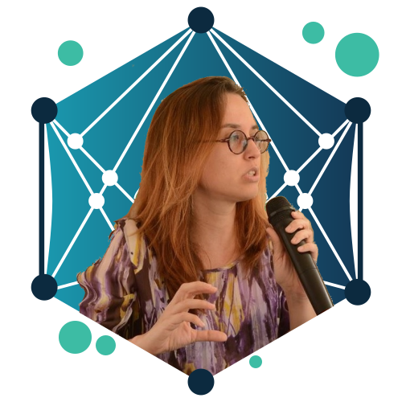
Prof. Dr. Vânia Neris
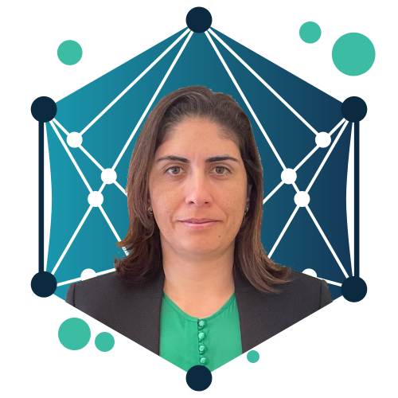
Vânia Neris is an Associate Professor in the Department of Computing at UFSCar, in Brazil, where she leads the Flexible and Sustainable Interaction Lab (LIFeS). She received her Ph. D. in Computer Science from the University of Campinas (Brazil), has conducted research at the University of Reading (UK), and was a visiting scholar at George Mason University (USA). Her research interests include emotion-aware systems and computing technology for mental health and well-being. In this project, she is responsible for studies on the chatbot personalization.
PhD Students
David Leucas
David Leucas is a PhD student in Science, Technology, and Society (UFSCar), with a Master’s degree in Philosophy (UFRJ), a specialization in Neuropsychology (UVAM), and a background in Psychology. Currently conducting research in Affective Computing, focusing on the potential for emotional connections between humans and large language models (LLMs).
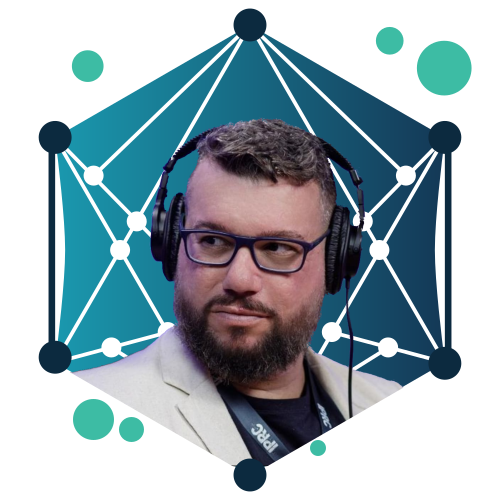
Diana Kylymnyk
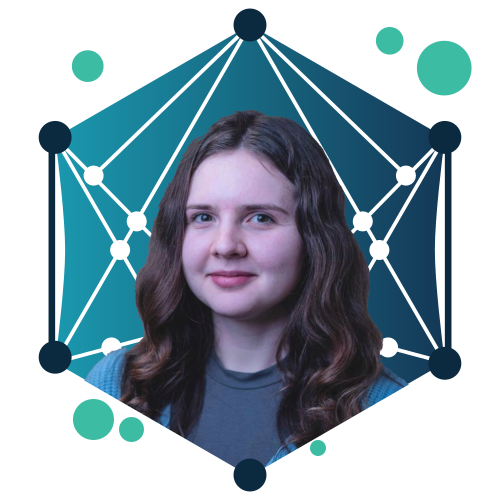
Diana Kylymnyk is a PhD Student in Computer Science and Psychology at the University of Exeter. My research explores how Natural Language Processing (NLP) can support and enhance digital mental health interventions. I focus on analyzing text data from online Cognitive Behavioral Therapy (CBT) platforms to better understand therapeutic progress, user engagement, and treatment outcomes.
Gabriel Lino Garcia
Gabriel Garcia is a PhD student in computer science with application in natural language processing. In AIM-Health project he is working as a co-supervisor of undergraduate students.
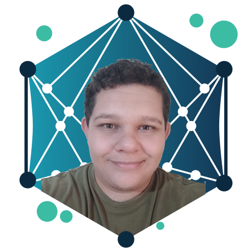
Grasiane Cristina da Silva
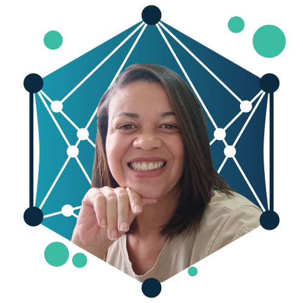
Grasiane Cristina da Silva is a PhD student in Computer Science at UFSCar. She holds a Master’s degree in Social Psychology (UFSJ), a specialization in Institutional and Clinical Neuropsychology (FAMEESP), and a background in Educational Psychology. Her current research focuses on personalization and the characteristics of social behavior in chatbots designed to support mental health.
Graziele Thainá Maciel Lima
Graziele Lima is a PhD candidate and Master’s degree holder in Letters from the Postgraduate Program in Letters (PPGL/UFS), specialist in Philosophy (Faculdade Iguaçu) and graduated in Letters – Portuguese (UFS). In the AIM-Health project, based on Rhetorical Structure Theory (RST), she develops the annotation of coherence relations identifying discursive markers and systematizing patterns between relations and markers in the Amive corpus.
Master’s Students
Caio de Assis Ribeiro
Caio Ribeiro is a Master’s student in the field of Machine Learning and Natural Language Processing at the Federal University of São Carlos (UFSCar). His work is centered around analysing the formation of communities in the context of social networks and the impact they have on the mental health and behaviour of their members.
Fernanda Malheiros Assi
Fernanda Assi is a Master’s student in the field of Machine Learning and Natural Language Processing at the Federal University of São Carlos (UFSCar). Her work centers on automatic identification of bias in large language models, particularly in the context of Brazilian Portuguese.
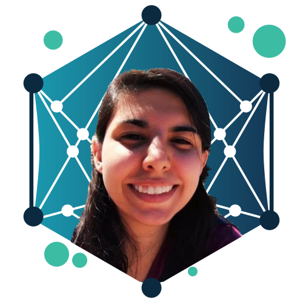
Karina Mayumi Johansson
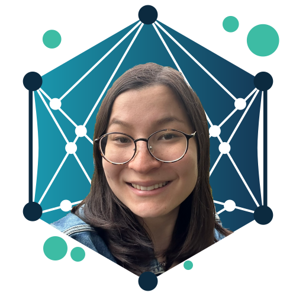
Karina Johansson is a Master’s student in the field of Machine Learning and Natural Language Processing at the Federal University of São Carlos (UFSCar). Her work centers on Automated Metaphor Detection, particularly in the context of Brazilian Portuguese.
Luís Fernando do Carmo Lourenço
Luís Lourenço is a Master’s student in the field of Machine Learning and Natural Language Processing at the Federal University of São Carlos (UFSCar). His research focuses on the assertiveness of conversational agents applied to mental health.
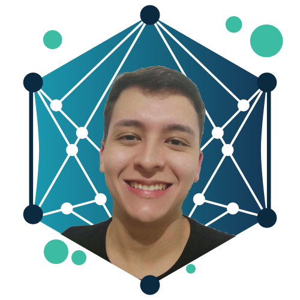
Rafael Vinicius Polato Passador
Rafael Passador is a Master’s student in the field of Machine Learning and Natural Language Processing at the Federal University of São Carlos (UFSCar). He works on exploring Large Language Models (LLMs) and Retrieval-Augmented Generation (RAG) techniques to develop a personalized conversational agent for individuals with mental health disorders.
Vinícius Borges de Lima
Vinícius Lima is a Data Engineer and a Master’s student in Natural Language Processing at the Federal University of São Carlos (UFSCar). In the AIM-Health project, he studies security guidelines for Artificial Intelligence applied to conversational agents for mental health.
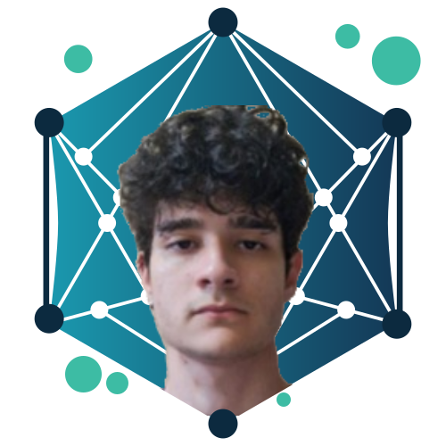
Undergraduate Students
Caio Vitor Soares
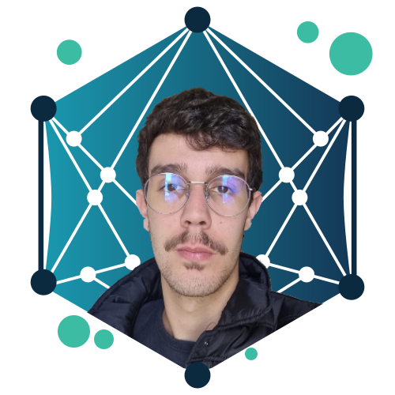
Caio Soares has been an undergraduate student at the Federal Institute of Education, Science and Technology of São Paulo (IFSP) since 2023. In the AIM-Health project, he develops a module using active learning to help the identification of signs of depression. His project is supported by FAPESP (25/05410-0).
Cristhyan Cauã de Oliveira
Cristhyan Cauã de Oliveira has been an undergraduate Psychology student at the Federal University of São Carlos (UFSCar). In the AIM-Health Project, he investigates how students with a possible depressive profile experience and attribute meaning to their psychic suffering and to mental health care through digital technologies.
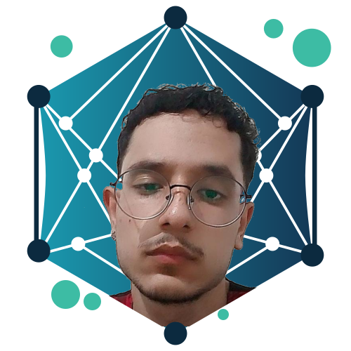
Diogo Conforti Vaz Bellini
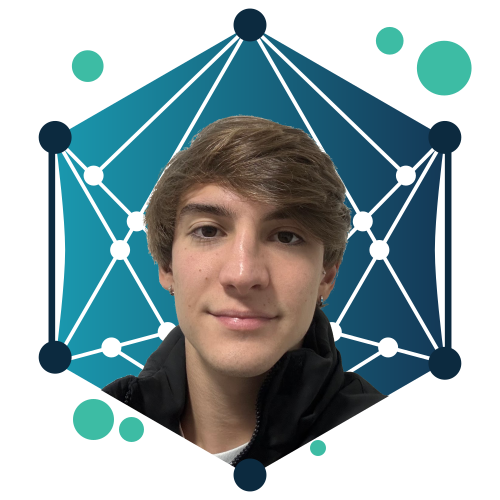
Diogo Bellini has been an undergraduate Computer Science student at the Federal University of São Carlos (UFSCar) since 2023, focusing his studies on the field of Artificial Intelligence. In the AIM-Health project, he develops a module to classify symptoms of depression in social media posts that also take into account the presence of figurative language, such as metaphors and similes, to express the symptoms. His project is supported by FAPESP (25/05366-0).
Isabela Cristina Rodrigues
Isabela Rodrigues has been an undergraduate Linguistics student at Federal University of São Carlos (UFSCar) since 2023. In AIM-Health project, she works with metaphor annotation in texts related to mental health, in Portuguese. Her project is supported by FAPESP (25/09978-0).
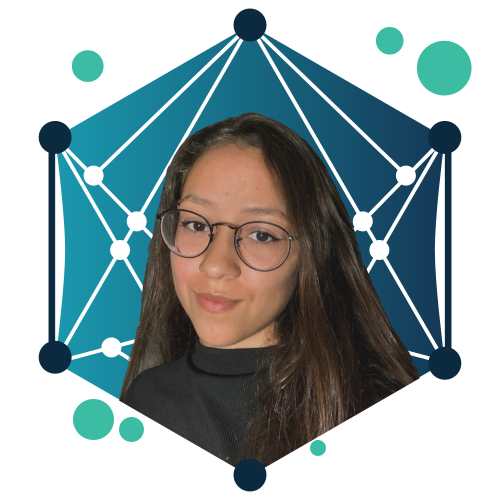
Julia Oliveira Pasquini
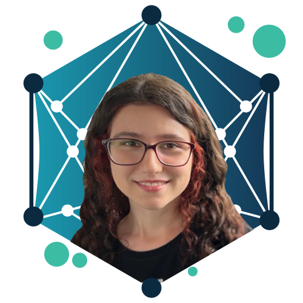
Julia Pasquini has been an undergraduate Psychology student at Federal University of São Carlos (UFSCar) since 2025. In the AIM-Health project, she analyzes the impact of the AMIVE computational intervention on students’ quality of life based on user reports, to investigate the utility and practical applicability of AMIVE’s dialogues. Her project is supported by FAPESP (25/26440-4).
Mariana Marques de Oliveira
Mariana Marques de Oliveira is an undergraduate Psychology student at Federal University of São Carlos (UFSCar). Currently initiating a research project to investigate the potential of Conversational AI in identifying anxiety markers among college students with depressive-anxious profiles.
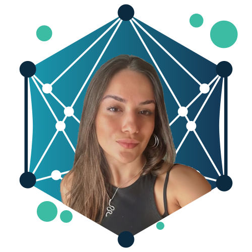
Vitória Rodrigues Pinto Borelli Figueiredo
Vitória Hilgert Tomasel
Vitória Tomasel has been an undergraduate Computer Science student at the Federal University of São Carlos (UFSCar) since 2023. In the AIM-Health project, she develops a module to automatically identifying idiomatic language in the mental health domain. Her project is supported by FAPESP (25/05422-8).